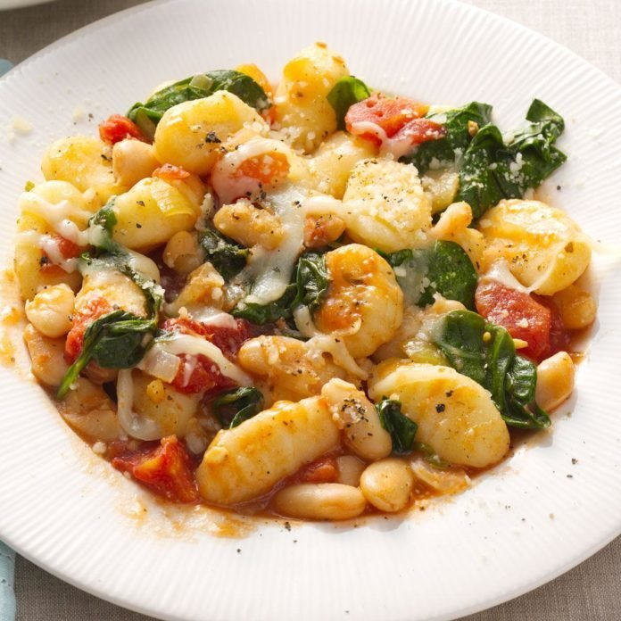
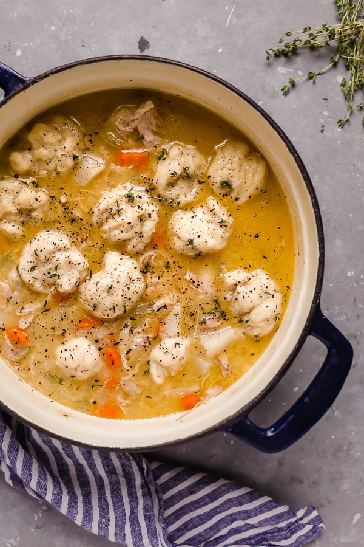

Vegetarian
Non-Vegetarian
Pastas and Soups
Kitchen Essentials
Claire's Cuisine
Sitemap
Contact
Pasta and Soup Recipes
Filter Recipes:
Asian
American
European
Hispanic
Indian
Mediterranean
North African
Low Carb
Low Calorie
Pastas
Soups
Sweet Potato Chili
Quick Chicken Tortilla Soup
Mediterranean Broccoli Bean Pasta
Vegetarian Chili
Avocado Pesto Pasta
Sesame Noodle Stir-Fry
Kale and Quinoa Minestrone Soup
Quick White Bean Parmesan Spinach Soup
Tuscan White Bean Pasta
Wild Rice Soup
Easy Pad Thai
White Bean and Fall Veggies Stew
Cranberry Bean Pasta Fagioli
Ramen Noodle Steak Skillet
Creamy Chicken Tortilla Soup
Yellow Split Pea Soup

Gnocci with White Beans
Tomato and Saffron Risotto
Chrissy Teigan Mac and Cheese
Spicy Miso Spaghetti
Potato Soup

Chicken and Dumplings
Creamy Vegan Pasta
Slow Cooker Ribollita
Quinoa Veggie Soup with Kale
Vegetarian Lo Mein
Slow Cooker Tomato Basil Soup
.jpg "sweet potato chili")